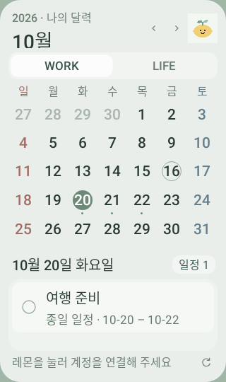
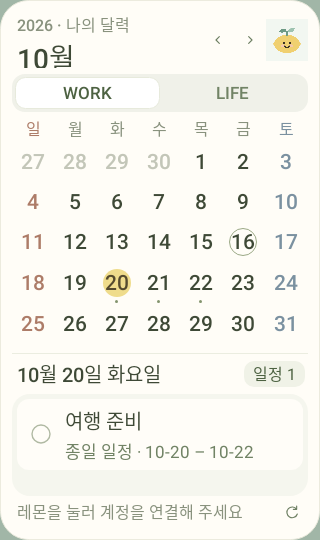
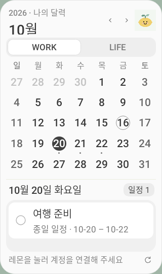

나의 기록은 앱에서,
달력은 홈 화면에서
Arecmik 앱 하나로 일정·기록·프로젝트를 관리하고, 홈 화면 위젯에서 월 달력과 그날의 할 일을 확인해요. 위젯에서 바로 완료 체크할 수 있어요.
v1.2.0 · Android 8 이상 · 무료 개인 설치
기존 위젯 앱을 설치했다면 삭제하지 않고 이 파일로 업데이트해 주세요. 앱 아이콘 이름이 Arecmik으로 바뀌고 연결 정보는 유지됩니다. 앱 화면의 첫 로그인은 한 번 더 필요할 수 있어요.
처음 한 번만 연결해 주세요
- 받은 APK 파일을 열어 설치합니다. 휴대폰이 요청하면 다운로드에 사용한 브라우저의 이 출처의 앱 설치를 허용해 주세요.
- Arecmik 앱에서 Google로 로그인을 누릅니다. 브라우저에서 Google로 앱과 위젯 연결을 눌러 기존 앱과 같은 계정을 선택하고, Arecmik 앱으로 돌아가기로 돌아옵니다. 로그인 후에는 앱 안에서 기록과 일정을 사용할 수 있어요.
- 앱의 ⚙ 설정 → 위젯 설정에서 홈 화면에 위젯 추가를 누릅니다. 지원하지 않는 홈 화면에서는 빈 곳을 길게 누르고 위젯 목록에서 Arecmik을 추가해 주세요.
다음 업데이트부터는 설정에서
웹앱 설정의 APK 설치 · 업데이트를 누르면 설치 파일을 바로 받습니다. 설치한 앱에서는 같은 버튼으로 새 버전을 받고 Android 설치 확인창으로 이동해요. 처음 한 번 설치 권한을 허용하고, 마지막 설치는 직접 눌러 주세요.
내 배경화면에 맞는 디자인
⚙ → 위젯 설정 → 위젯 디자인에서 반투명, 레몬 크림, 흑백 중 골라 주세요. 기본은 배경화면이 비치는 반투명이며 바꾸면 모든 위젯에 바로 적용됩니다.



디자인 예시이며 일정은 샘플입니다. 반투명 색감은 휴대폰 배경화면에 따라 달라요.
편하게 사용하는 방법
위젯은 가로 4칸, 세로 5칸 이상으로 크게 배치해 주세요. 날짜 옆의 작은 점은 일정이 있다는 표시입니다. 날짜를 누르면 아래에 일정 제목이 큰 글씨로 표시되고, □를 눌러 완료할 수 있어요. 달력 제목을 누르면 이번 달로 돌아옵니다.
앱 화면은 기존 웹앱과 같은 데이터에 연결합니다. 위젯은 변경을 약 1시간마다 가져옵니다. Android 절전 상태에 따라 늦어질 수 있으며, 위젯의 ↻를 누르면 새로 동기화합니다. 오프라인에서 체크한 변경은 기기에 보관했다가 연결 후 전송합니다.
별도 유료 서버 없이 기존 Firebase에 연결합니다. Firebase의 기존 무료 사용 한도는 적용됩니다. 계정 연결 정보는 휴대폰에 암호화해 보관하며 공개 주소로 일정을 공유하지 않습니다.